影片主题：爱在父亲节——有一种幸福叫，传递温暖，也被温暖！
影片时长：150秒
视频风格：伪纪录片
| 旁白 | 对白 | 画面（手持拍摄为主，多使用晃镜头） |
| 骑手自拍视角 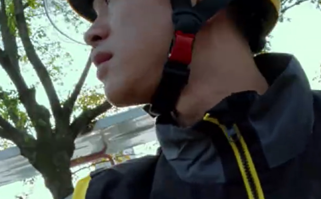 |
||
| 手握油门，骑行第一视角 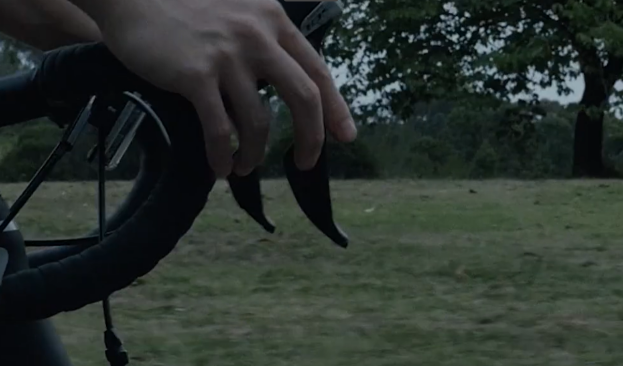 |
||
| 雅迪外卖车在街头驶过 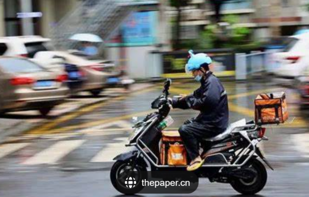 |
||
| 又是一天 | 外卖员停下车，在车上吃饭 | |
| 到现在 | 镜头模拟外卖员视角拍摄路上行人 | |
| 我跑了快三十单了 | 翻看手机 | |
| 订单很多，有点累 | 远景交代外卖员环境，外卖员起身重新送单 | |
| 但也值得 | 外卖员手机看孩子照片 | |
| 今天送的单 | 外卖员急刹停在马路边，外卖员提着外卖跑过人群 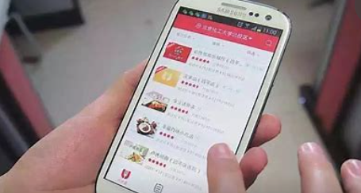 |
|
| 有些不一样 | 三组外卖员送出、客人取餐的镜头快切（表示多次） | |
| 茶叶、蛋糕、剃须刀 | 照片集锦（声效快门声） | |
| 皮带、鲜花、电动牙刷 | 照片集锦（声效快门声） | |
| 这些平时可不多见 | 栏杆遮挡前景，雅迪快速行驶 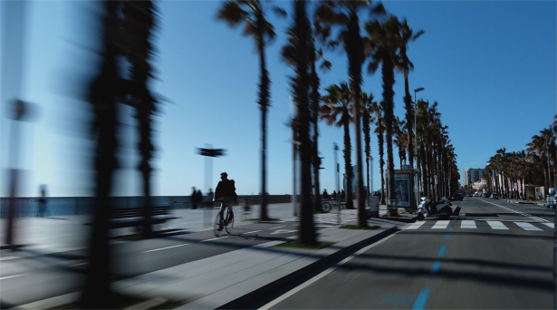 |
|
| 跑单…… | 模拟外卖员第一视角拍摄头顶行道树（运动模糊） | |
| 特别像小时候翻阅连环画 | 外卖员经过公园，在车上看路人 | |
| 一天一天，从早到晚 | 公园人物原声 | 公园人物百态 |
| 谁都猜不到我接下来会送什么 | 公园人物原声 | 公园人物百态 |
| 各种各样的场景 | 街景 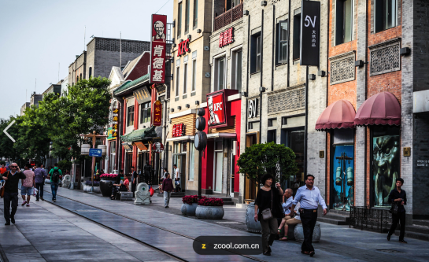 |
|
| 各种各样的人 | 街头人群 |
|
| 有位客人在外地给他爸爸点了蛋糕 | 外卖员取餐，放到后备箱 | |
| 备注里特别交代 | 雅迪过坑洼路段 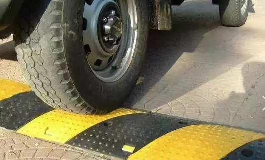 |
|
| 今天恰好是她爸生日 | 外卖箱里的蛋糕特写 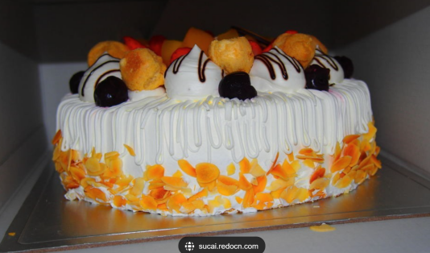 |
|
| 让我小心别把蛋糕颠坏了 | 外卖员递上外卖 |
|
| 幸亏我的雅迪搭子够给力 | 男人拿到外卖露出笑容 | |
| 辛苦了辛苦了！ | ||
| 不客气哈！ | ||
| 蛋糕好好的 | 备注特写 | |
| 一年四季、一天到晚 | 外卖员快速行驶在路上（白天+夜晚） 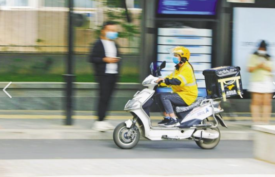 |
|
| 这些小礼物、小温暖 | 外卖员上天桥 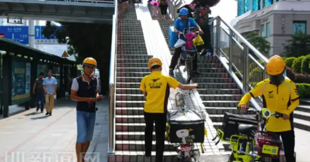 |
|
| 没有间断过 | ||
| 送得多了就知道 | 外卖员提着外卖跑在人群中 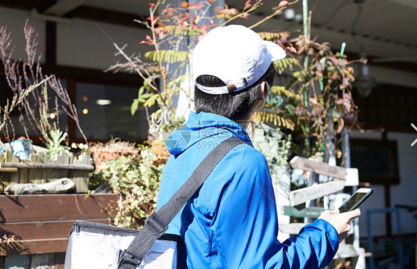 |
|
| 手里的 | 外卖员手提外卖特写 | |
| 不光是一日三餐 | 路人愉悦的生活状态（扫街拍摄） | |
| 可能还有别人隔着千里万里 | 路人打电话交流、开视频交流（扫街拍摄） | |
| 没法亲手送达的想念 | 天空云朵、落日湖边等意象景色快切 | |
| 寻常日子里的小关心 | 外卖员余光扫到雅迪店门口活动 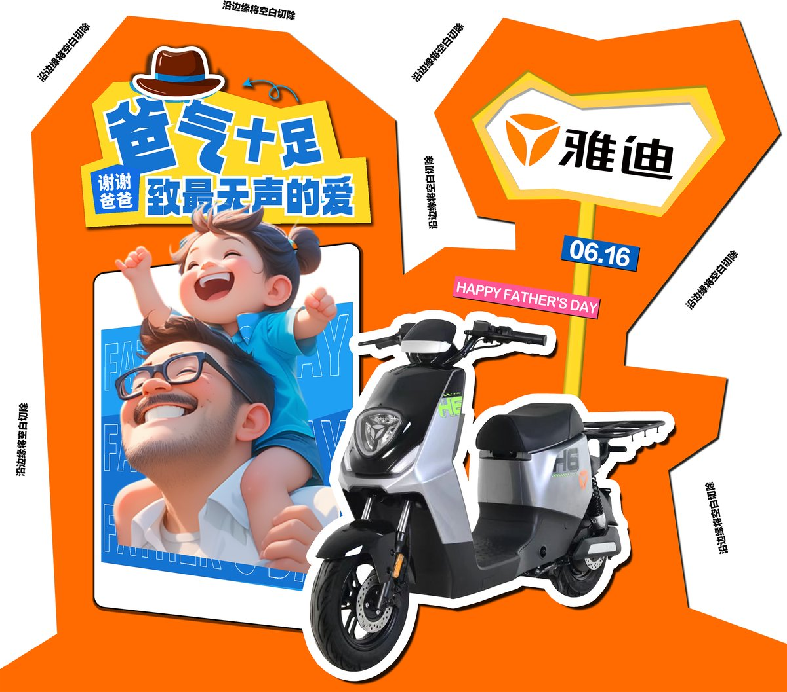 |
|
| 小哥小哥，我们雅迪今天做活动，送你一份礼物，节日快乐！ | 骑手在雅迪门店叫住，领取了一份礼包，骑手拿出来看，里面有个玩偶 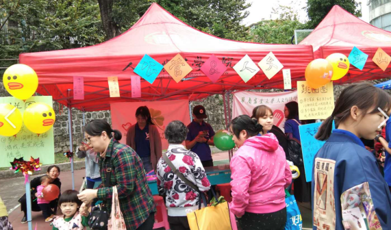 |
|
| 谢谢谢谢！ | 外卖员一边懵，一边接过礼包 | |
| 跑单两年多了 | 外卖员翻礼包发现玩偶 | |
| 好像每天都有这种小惊喜 | 外卖员骑行在回家路上 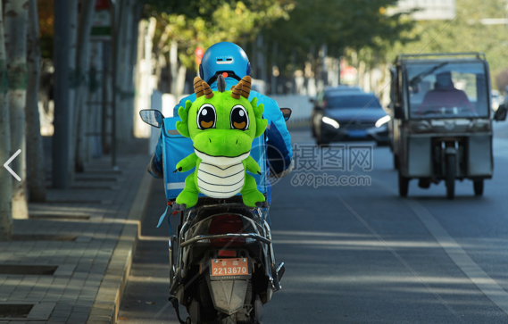 |
|
| 我为什么跑外卖 | 无人机拍外卖员回家背影 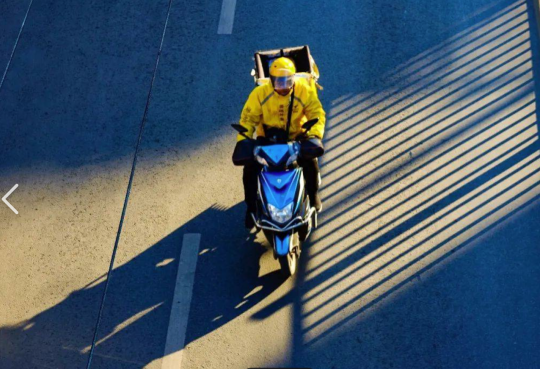 |
|
| 不光是为了赚钱 | 外卖员回家刹车，摘下头盔 | |
| 像这样 | 外卖员拿着玩偶，想等他回家的女儿招手 | |
| 能帮别人传递温暖 | 慢镜头，女儿笑着向外卖员跑来 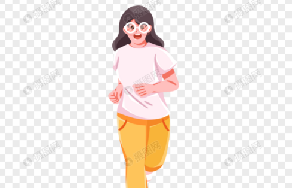 |
|
| 自己也被温暖着 | 雅迪活动人员3、六岁女4、外卖员
笑容混剪 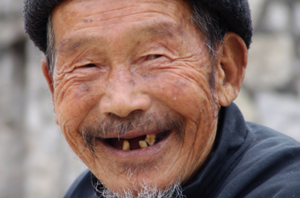 |
|
| 我觉得就挺好 | 外卖员抱起女儿 |
|
| “爸爸父亲节快乐！” | 女儿肩头耳语 |
|
| 骑手在玩偶背后看到雅迪手写父亲节贺卡，讶异，恍然大悟，转而微笑 | ||
| 落黑： 雅迪外卖车 为千万骑手造好车 |